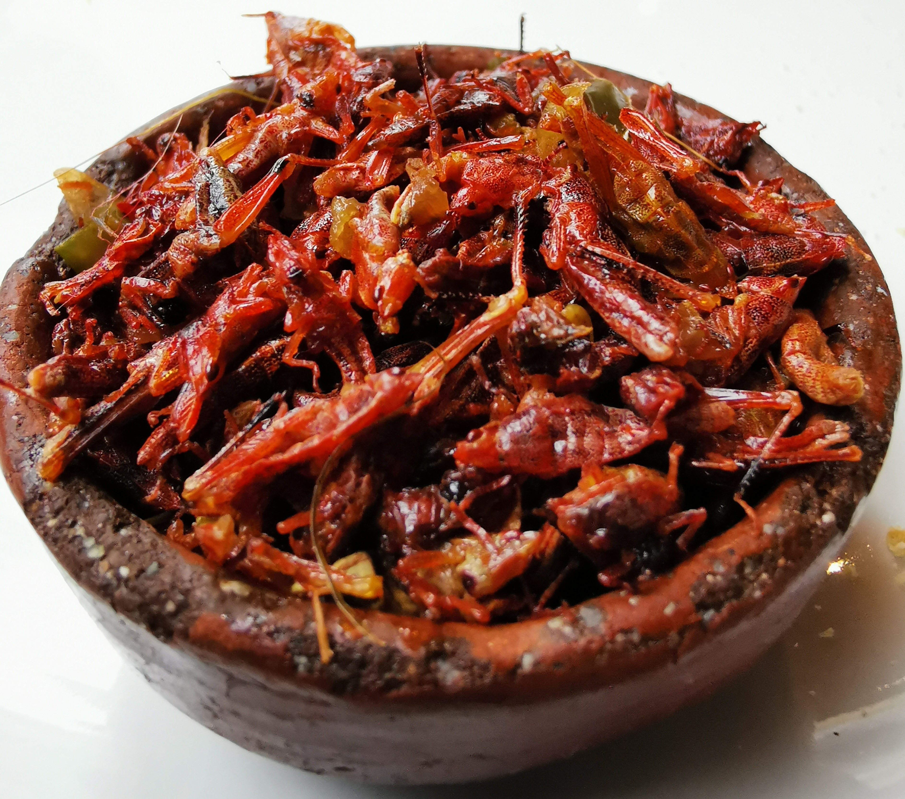
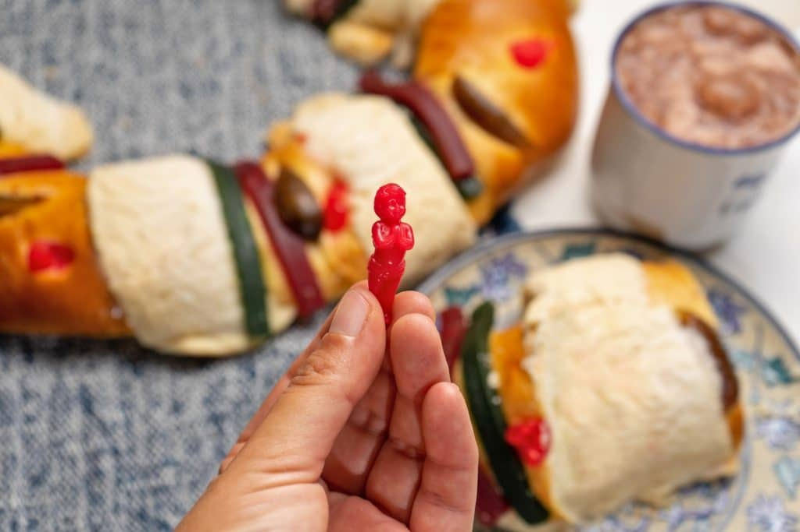
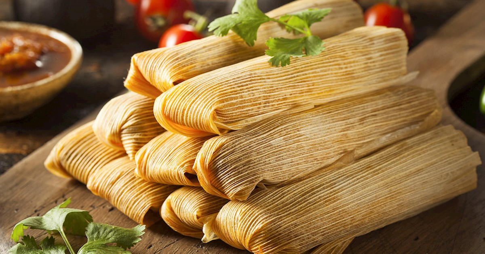

Chiles en Nogada Reflect the Flag

One of the most interesting facts about Mexican food is that each holiday has its own traditional foods. For Independence Day, families and restaurants around the country will be cooking chiles en nogada: green chilies stuffed with ground meat and vegetables, covered with a creamy walnut sauce and red pomegranate seeds. The green, red, and white of this traditional Mexican food reflect the colors of the country’s flag, perfect for Independence Day.
Most Edible Insects Are Found in Mexico
Mexican cuisine can be surprising, and in some regions, grasshoppers are a favorite. To flavor them, add some lime juice and chili peppers, and you can even put them into your tacos. This is one of the most interesting facts about Mexican food that you’ll want to experience in your travels. For example: Chapulines (the plural of chapulín) are dried and roasted grasshoppers, a pre-Hispanic Mexican delicacy. They are small—most are shorter than the length of an adult pinky—and nutty in flavor. The cooking process can add additional flavors, such as lemon, garlic, and chile.
You Might Find a Baby in a Cake
Holidays in Mexico have their own treats and traditions, and on the Catholic Day of Epiphany, Mexico celebrates Three Kings Day with rosca de reyes. This ring-shaped flaky pastry is decorated with colorful sugar and candied fruits. When you take a slice, watch out for a plastic baby that’s been hidden inside. One of the most fun facts about Mexican food is that whoever finds it is in charge of bringing tamales to the next celebration on February 2.
Tamales Are One of the Oldest Mexican Foods
Tamales are ancient and date back over 8,000 years. The word “tamale” stems from tamalii, a Nahuatl word spoken by the Aztecs that means “wrapped food.” This traditional Mexican food is made from masa dough stuffed with meat and vegetables, all wrapped up and steamed in corn husks or banana leaves. Because of this, tamales were perfect for packing on hunting expeditions and long traveling trips.